Analiza rješenja · JOI Spring Camp 2020 · Dan 2
Najstarije ruševine 3
O ovom članku
Tekst je prijevod službene japanske prezentacije rješenja, preoblikovan u članak. Slajdovi su ugrađeni kao slike; natpis pod svakim slajdom je prijevod teksta na njemu. Dijelovi označeni kao trenerska napomena nisu u izvornoj prezentaciji — dodani su da popune korake koje slajdovi preskaču ili samo skiciraju.
Slajdovi
Uvod
izvorni slajdovi 1–2
-
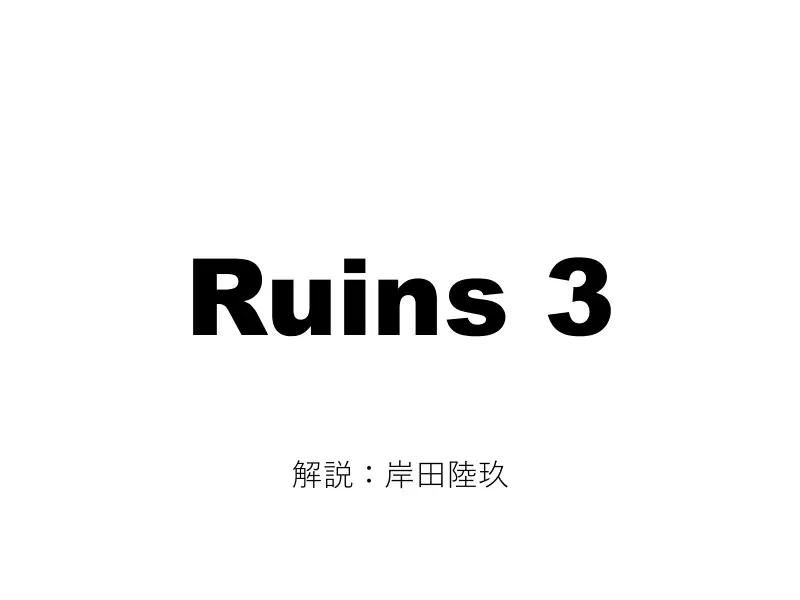
1Naslovni slajd: Ruins 3, analiza: Kishida Riku. -
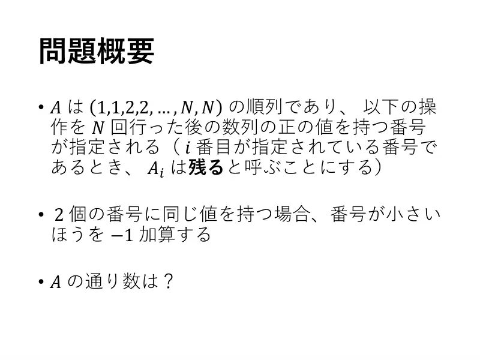
2Sažetak. $A$ je permutacija multiskupa $1,1,2,2,\ldots,N,N$; nakon $N$ operacija zadani su indeksi s pozitivnom vrijednošću („preživjeli”). Operacija: kad dva indeksa imaju istu vrijednost, manji indeks dobiva $-1$. Koliko je takvih $A$?
← → tipke ili klik na sliku
Podzadatak 1 6 bodova
Koraci algoritma
Promatranje prijelaza i DP po stanju B
izvorni slajdovi 3–8
-
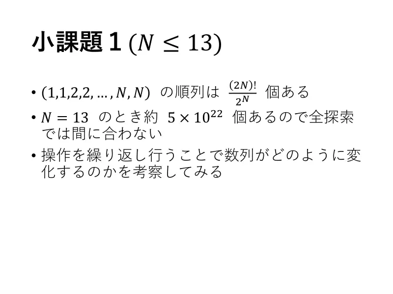
3Permutacija je $\frac{(2N)!}{2^N}$; za $N=13$ oko $5\cdot 10^{22}$ — iscrpno pretraživanje ne prolazi. Promotrimo kako se niz mijenja ponavljanjem operacije. -
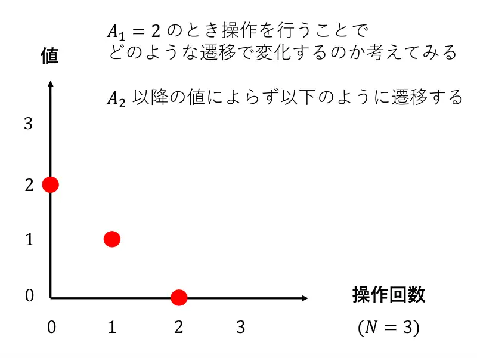
4Dijagram (vrijednost × broj operacija) za $A_1 = 2$, $N = 3$: neovisno o $A_2, \ldots$ vrijednost prelazi $2 \to 1 \to 0$. -
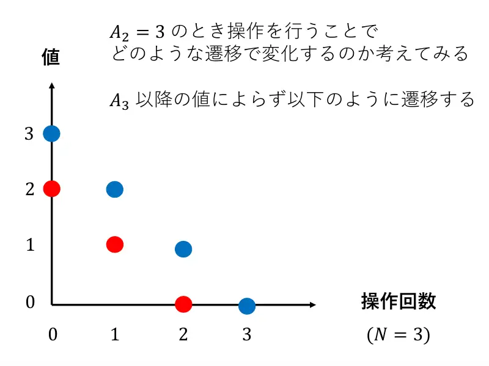
5Za $A_2 = 3$: prijelazi neovisni o $A_3, \ldots$. -
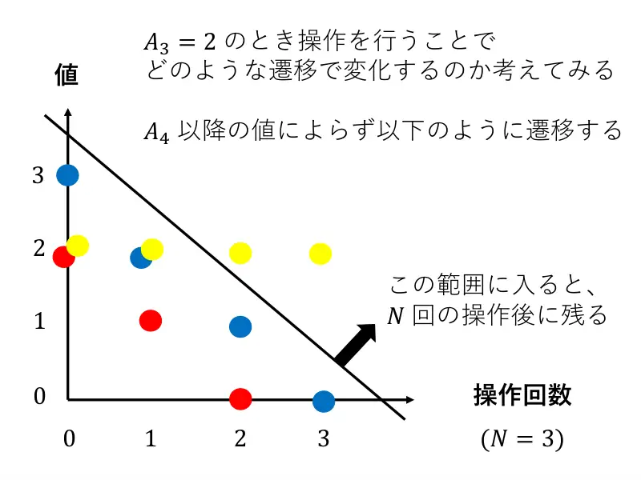
6Za $A_3 = 2$: kad vrijednost uđe u označeno područje, ostaje nakon $N$ operacija. -
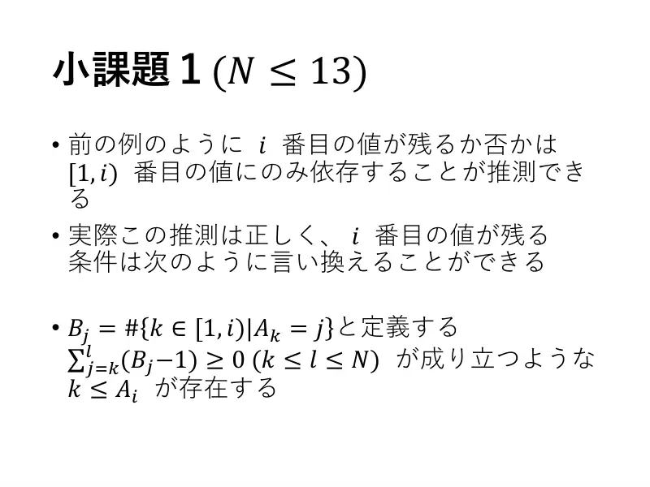
7Nagađamo (i točno je): hoće li $i$-ti element ostati ovisi samo o elementima $[1, i)$. Uz $B_j = \#\{k < i : A_k = j\}$ uvjet je: postoji $k \le A_i$ takav da $\sum_{j=k}^{l}(B_j - 1) \ge 0$ za sve $k \le l \le N$. -
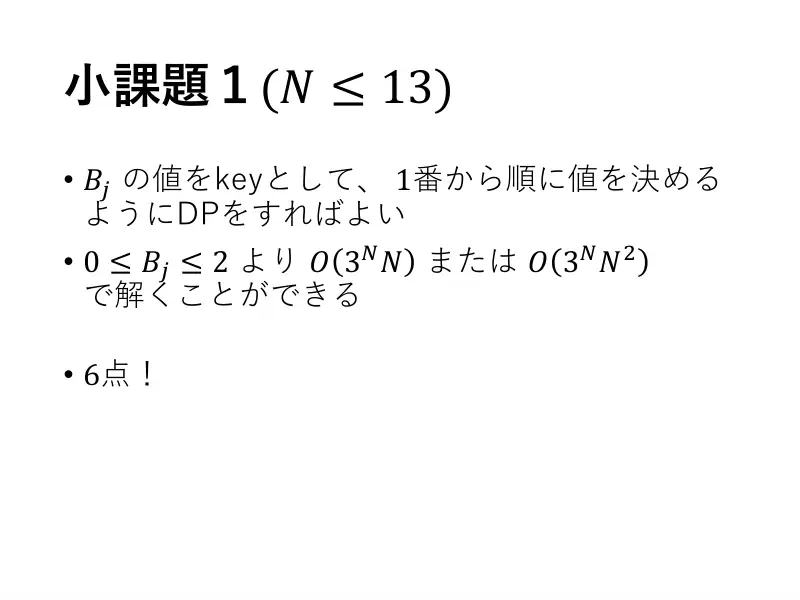
8DP slijeva sa stanjem $(B_j)_j$; $0 \le B_j \le 2$ daje $O(3^N N)$ ili $O(3^N N^2)$. 6 bodova.
← → tipke ili klik na sliku
Podzadatak 2 52 boda
Koraci algoritma
Stanje k' i Dyckov niz
izvorni slajdovi 9–13
-
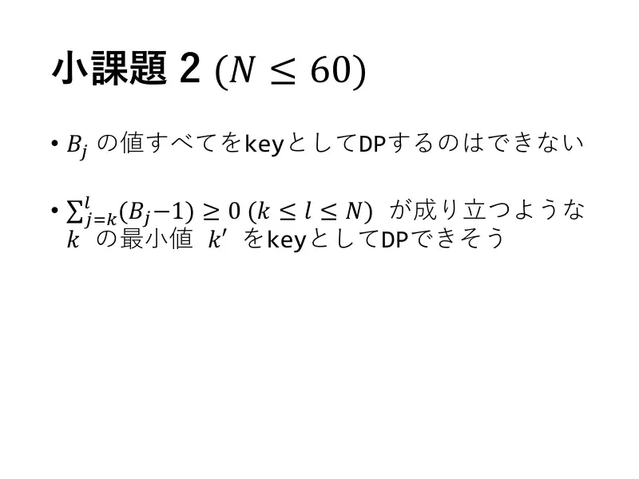
9Ne možemo držati sve $B_j$ u stanju. Umjesto toga: najmanji $k'$ za koji vrijedi $\sum_{j=k}^{l}(B_j-1) \ge 0$ za sve $l$. -
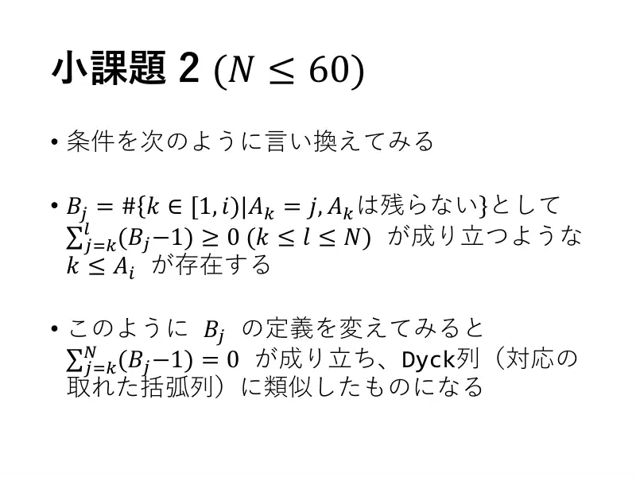
10Preformulacija: $B_j$ brojimo samo po nepreživjelim $A_k$. Tada vrijedi $\sum_{j=k'}^{N}(B_j - 1) = 0$ — struktura nalik Dyckovom nizu (uparene zagrade). -
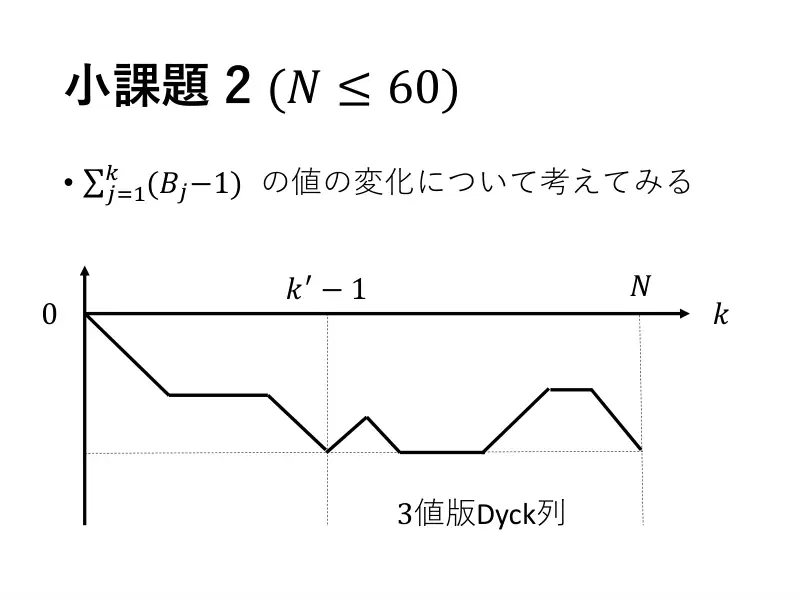
11Graf parcijalnih suma $\sum_{j=1}^{k}(B_j-1)$: od $N$ prema dolje do $k'$ imamo „3-vrijednosni Dyckov niz” (koraci $-1, 0, +1$). -
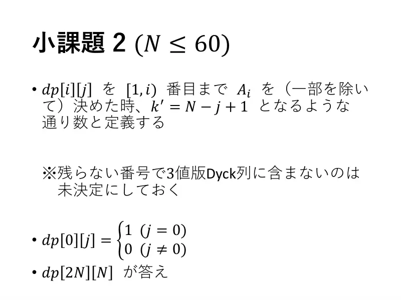
12$\mathrm{dp}[i][j]$ = broj načina da odlučimo $A$ na $[1, i)$ (osim dijela) tako da je $k' = N - j + 1$. Nepreživjeli indeksi izvan Dyckovog dijela ostaju neodlučeni. $\mathrm{dp}[0][0] = 1$, odgovor $\mathrm{dp}[2N][N]$. -
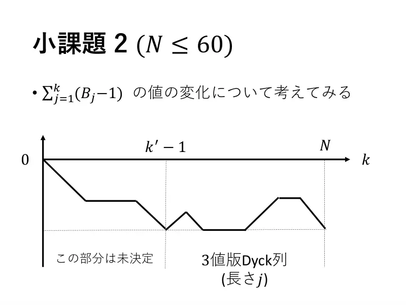
13Slika: odlučeni Dyckov dio duljine $j$ gore, neodlučeni dio dolje.
← → tipke ili klik na sliku
Koraci algoritma
Prijelaz kad A_i ostaje
izvorni slajdovi 14–16
-
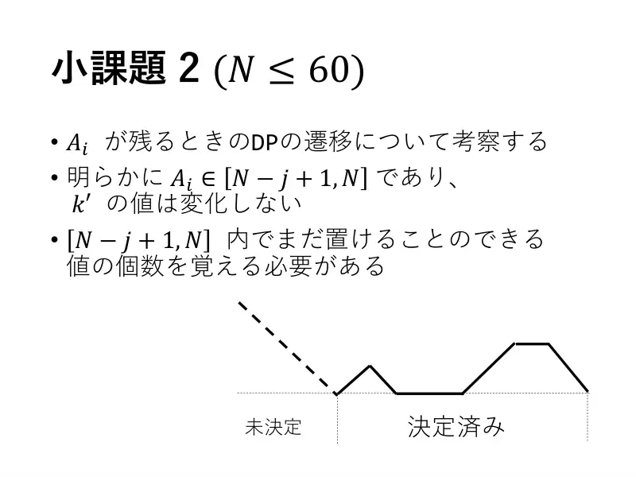
14Ako $A_i$ ostaje: očito $A_i \in [N-j+1, N]$ i $k'$ se ne mijenja. Treba znati koliko je vrijednosti u bloku još slobodno. -
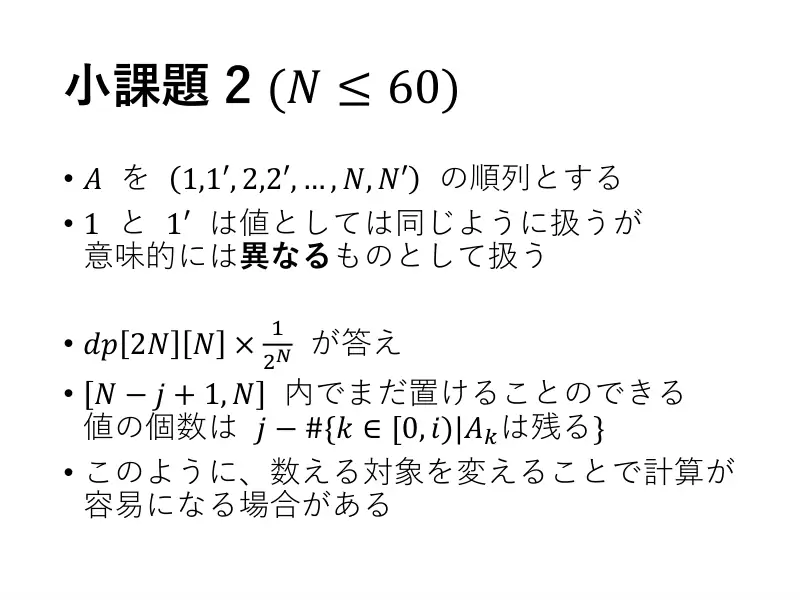
15Trik: $A$ je permutacija $1, 1', 2, 2', \ldots, N, N'$ — kopije su iste vrijednosti, ali ih brojimo kao različite; odgovor je $\mathrm{dp}[2N][N]/2^N$. Slobodnih vrijednosti u bloku je $j - \#\{k < i : A_k \text{ ostaje}\}$. Promjena onoga što brojimo često pojednostavi račun. -
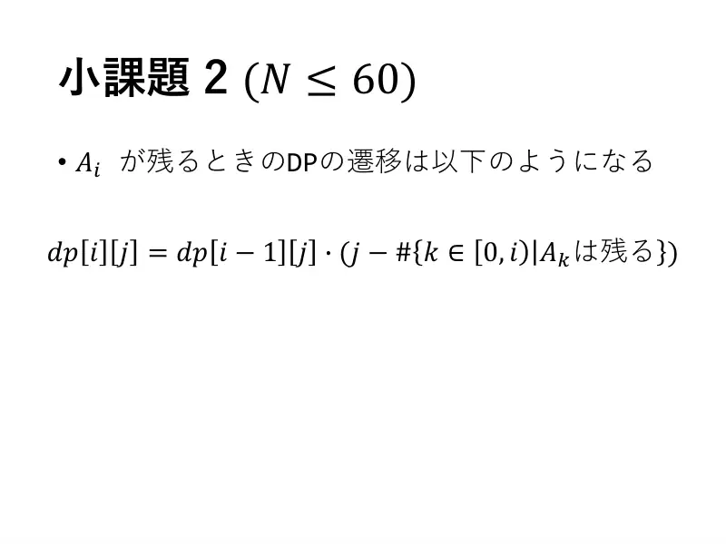
16$\mathrm{dp}[i][j] = \mathrm{dp}[i-1][j]\cdot(j - \#\{k \lt i: A_k \text{ ostaje}\})$.
← → tipke ili klik na sliku
Koraci algoritma
Prijelaz kad A_i ne ostaje
izvorni slajdovi 17–25
-
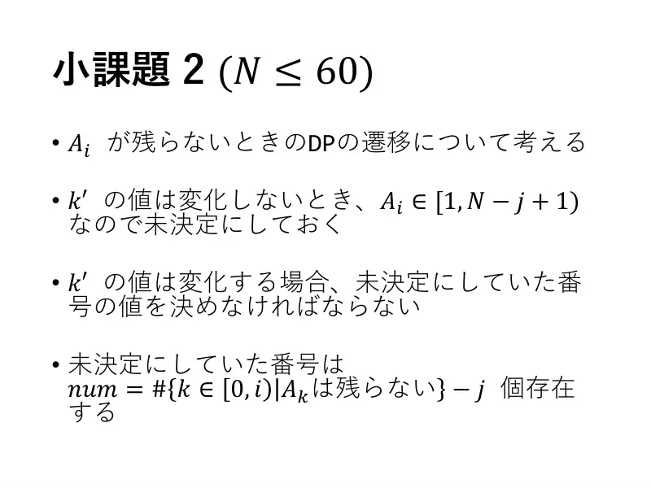
17Ako $A_i$ ne ostaje: ili $k'$ ostaje isti ($A_i < N-j+1$, ostavi neodlučeno), ili se $k'$ smanji — tada moramo dodijeliti vrijednosti neodlučenim indeksima; ima ih $\mathit{num} = \#\{k \lt i : A_k \text{ ne ostaje}\} - j$. -
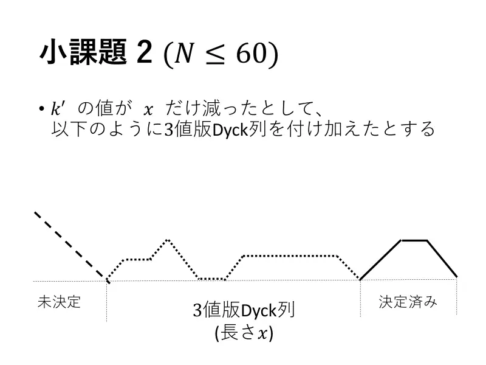
18Neka se $k'$ smanji za $x$: dodajemo 3-vrijednosni Dyckov niz duljine $x$ ispod postojećeg. -
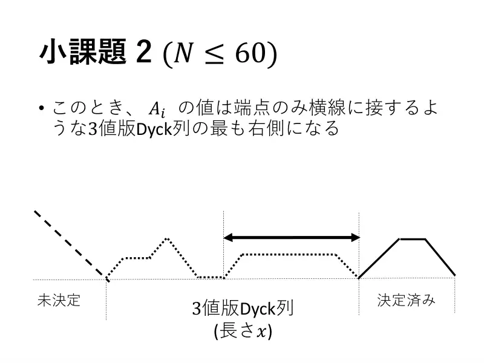
19$A_i$ tada leži u zadnjem (najdesnijem) dijelu tog niza koji dodiruje os samo u krajevima. -
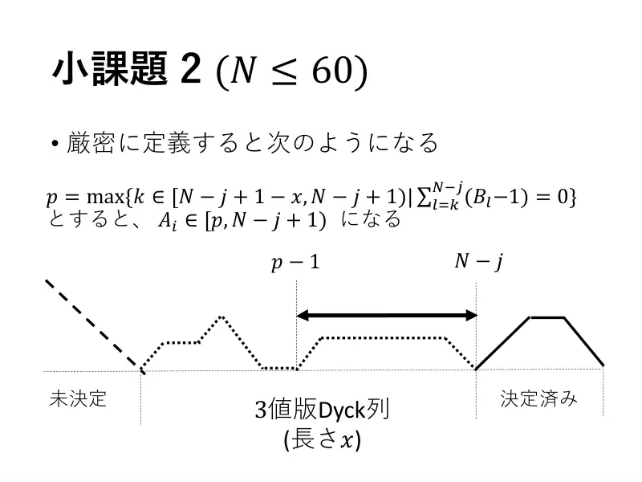
20Precizno: $p = \max\{k \in [N-j+1-x, N-j+1) : \sum_{l=k}^{N-j}(B_l - 1) = 0\}$; tada $A_i \in [p, N-j+1)$. -
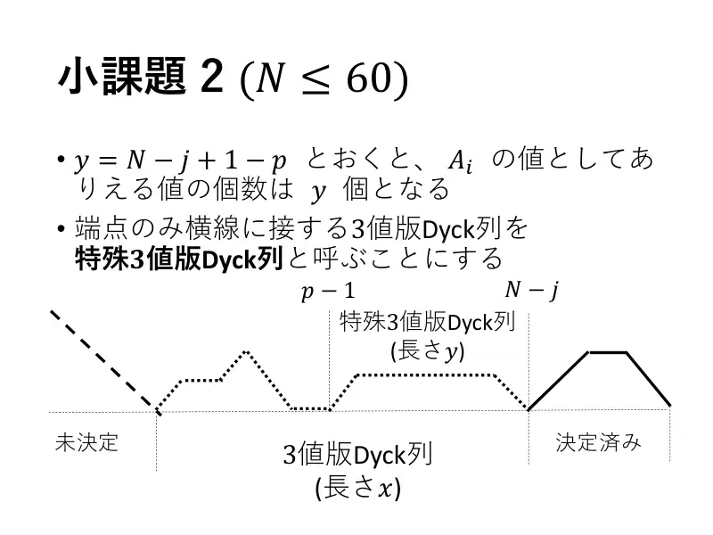
21Uz $y = N-j+1-p$, $A_i$ ima $y$ mogućih vrijednosti. Dyckov niz koji os dodiruje samo u krajevima zovemo posebnim. -
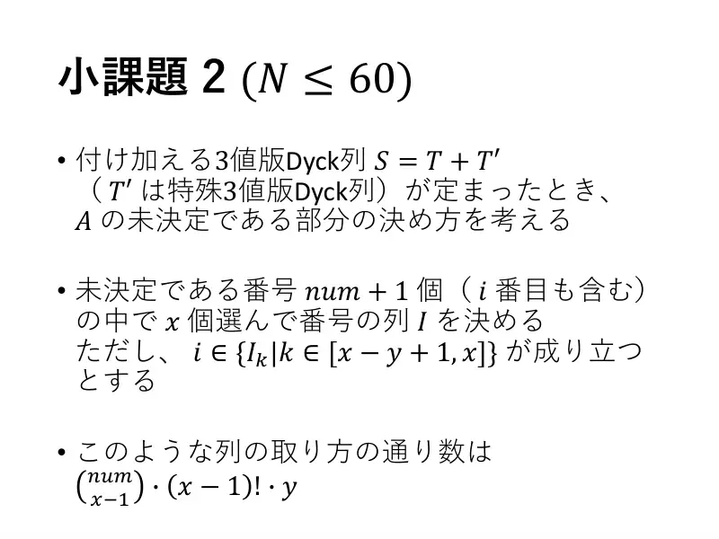
22Zadan dodani niz $S = T + T'$ ($T'$ poseban): od $\mathit{num}+1$ neodlučenih indeksa (uključivo $i$) biramo $x$ i uređujemo ih u niz $I$, s uvjetom da je $i$ među zadnjih $y$: $\binom{\mathit{num}}{x-1}(x-1)!\,y$ načina. -
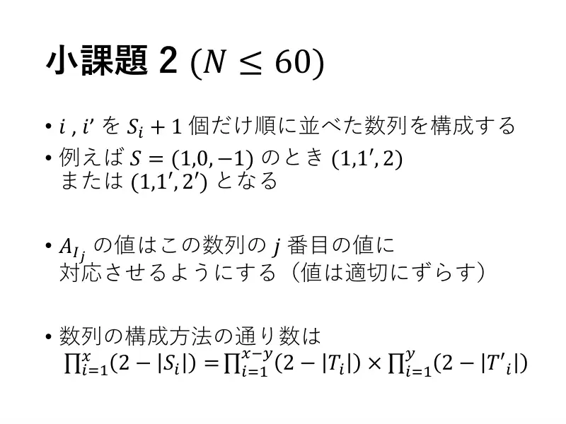
23Vrijednosti: za $S = (1, 0, -1)$ niz je $(1, 1', 2)$ ili $(1, 1', 2')$; $A_{I_j}$ dobiva $j$-ti član (pomaknut). Broj načina: $\prod_{i=1}^{x}(2 - |S_i|) = \prod(2-|T_i|)\cdot\prod(2-|T'_i|)$. -
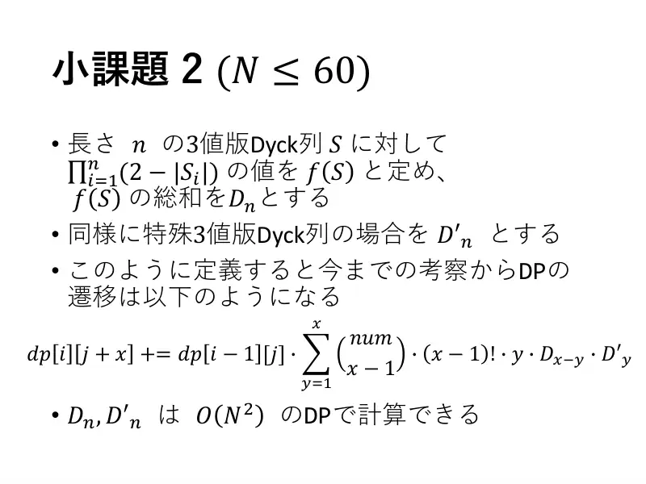
24$D_n$ = zbroj $\prod(2-|S_i|)$ po svim 3-vrijednosnim Dyckovim nizovima duljine $n$; $D'_n$ isto za posebne. Oboje $O(N^2)$ DP-om. Prijelaz: $\mathrm{dp}[i][j+x] \mathrel{+}= \mathrm{dp}[i-1][j]\cdot\sum_{y=1}^{x}\binom{\mathit{num}}{x-1}(x-1)!\,y\,D_{x-y}D'_y$. -
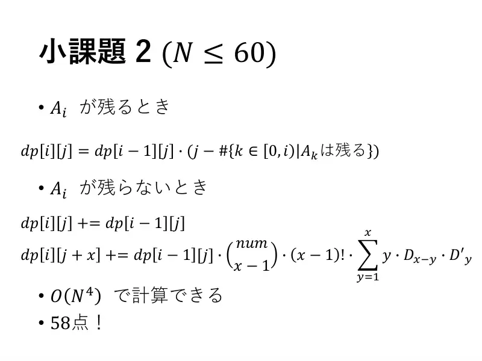
25Sažetak prijelaza: ostaje → množi s brojem slobodnih; ne ostaje → $\mathrm{dp}[i][j] \mathrel{+}= \mathrm{dp}[i-1][j]$ ili proširenje za $x$. Ukupno $O(N^4)$, 58 bodova.
← → tipke ili klik na sliku
Podzadatak 3 42 boda
Slajdovi
Zatvorena formula i kompaktan DP
izvorni slajdovi 26–27
-
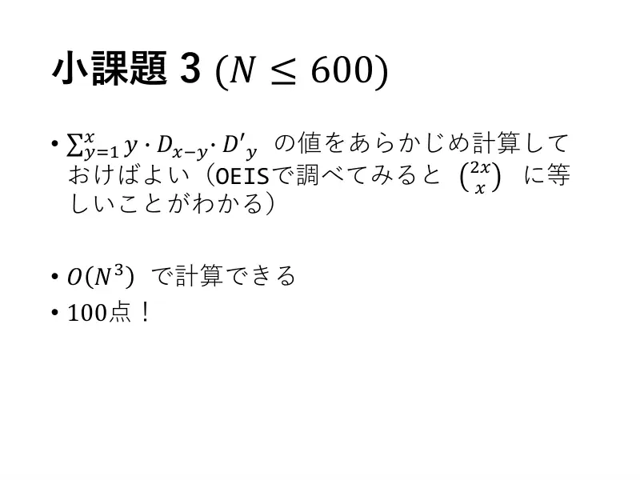
26Izračunaj $\sum_{y=1}^{x} y\,D_{x-y}D'_y$ unaprijed — pretraga na OEIS-u pokazuje da je jednako $\binom{2x}{x}$. Ukupno $O(N^3)$, 100 bodova! -
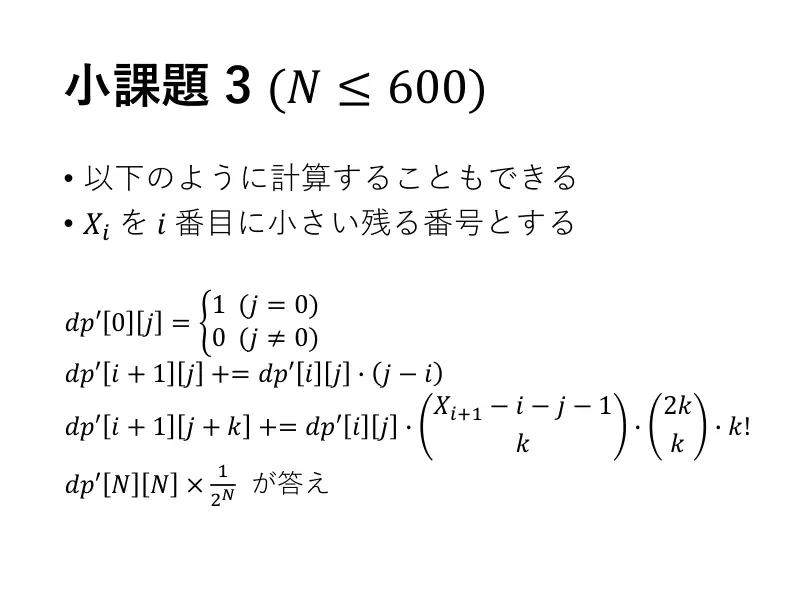
27Alternativa — DP samo po preživjelima ($X_i$ = $i$-ti najmanji preživjeli indeks): $\mathrm{dp}'[0][0]=1$; $\mathrm{dp}'[i+1][j] \mathrel{+}= \mathrm{dp}'[i][j]\,(j-i)$; $\mathrm{dp}'[i+1][j+k] \mathrel{+}= \mathrm{dp}'[i][j]\binom{X_{i+1}-i-j-1}{k}\binom{2k}{k}k!$; odgovor $\mathrm{dp}'[N][N]/2^N$.
← → tipke ili klik na sliku
Slajd
izvorni slajd 28
-
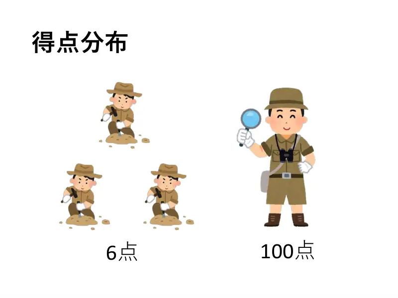
28Distribucija bodova: gotovo svi na $6$ bodova, nekoliko na $100$.
Sažetak
- Zdesna: stup uzima najvišu slobodnu razinu $\le h$; slijeva: preživi $\iff$ lijevi stupovi zasićuju blok $[k, N]$ za neki $k \le h$.
- Stanje DP-a: veličina zasićenog gornjeg bloka; nepreživjeli ispod bloka ostaju neodlučeni.
- Proširenje bloka za $k$ razina nosi faktor $\binom{u}{k}\binom{2k}{k}k!$; kopije brojimo kao različite pa dijelimo s $2^N$.